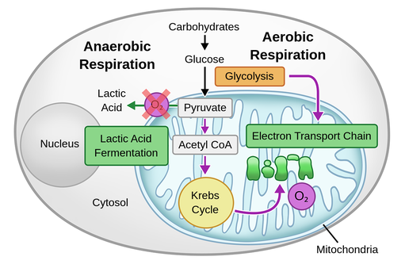
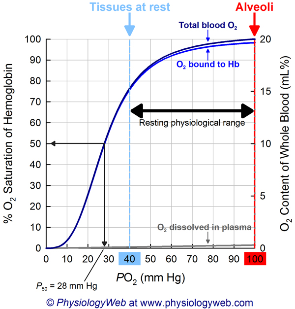
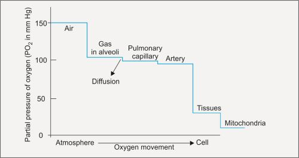
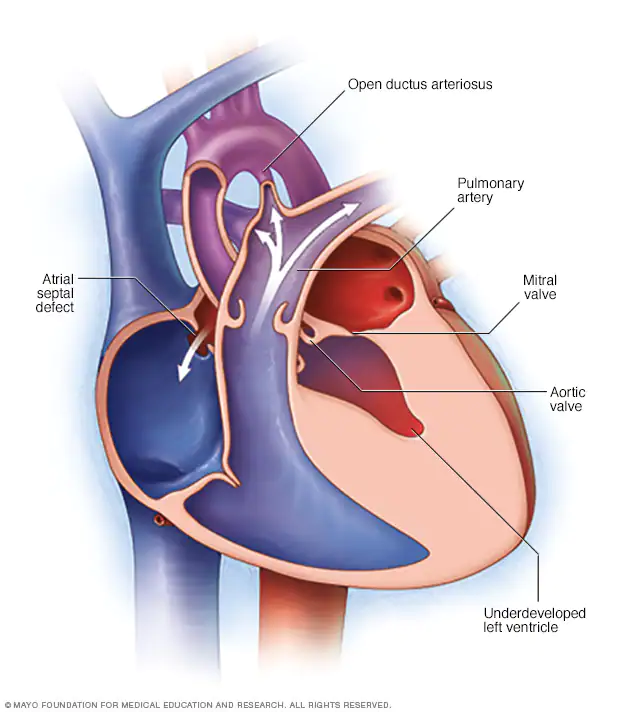
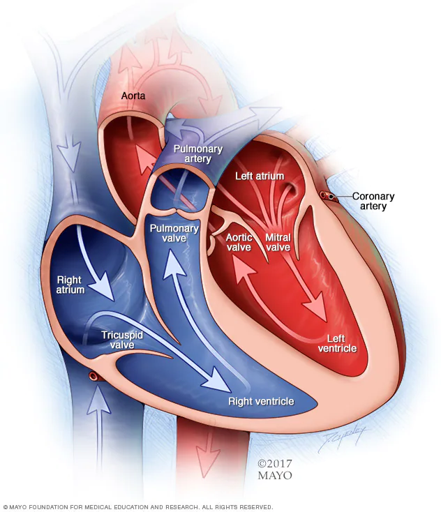

| Group 1 | |
| First Name | Last Name |
|---|---|
| Brittany | Jankauskas |
| Samantha | Quintero |
| Malek | Al Barbandi |
| Olivia | Janson |
| Natalia Marie | Jelen |
| Nathalia | Lopes |
| Akila | Raja |
| Alana | Xavier De Almeida |
Academic Half Day 2023: Pediatric Critical Care Medicine
Shock - Recognition, Classification & Management
Introduction
Provide a framework to recognize, classify, appropriately communicate, and initially treat shock
Exposure to the pediatric surviving sepsis guidelines and management
Understand the parameters that contribute to blood pressure (BP)
Accomplish these goals by case discussions followed by an in depth discussion of blood pressure parameters



Case 1
Presentation:
An infant boy, 6 weeks old, presents to our ED with the parental complaints of fever, lethargy, and poor feeding.
History:
A previously healthy infant boy seen regularly by his PCP. His parents report him as unwell for the past 12 hours becoming increasingly lethargic, refusing to feed, and had decreased number of diapers.
The parents deny any recent travel or sick contacts. They report no history of chronic medical conditions or surgeries. He has been growing and developing appropriately. Prenatal history of maternal GBS positive screen. The remainder of the neonatal history is unremarkable for a spontaneous vaginal delivery.
Physical Examination:
Vital signs are as follows:
Temperature: 39.8°C/103.6°F
Heart rate: 180 beats per minute
Respiratory rate: 45 breaths per minute
Blood pressure: 85/38 mmHg, MAP 54
Oxygen saturation: 94% on room air
Ill appearance and not active with noted tachypnea, no nasal flaring, and minimal subcostal retractions. His mucous membranes are dry and his capillary refill time is ~3 seconds. His anterior fontanelle is slightly sunken. On lung auscultation, minimal bilateral crackles are noted. The rest of the physical examination is unremarkable.
Investigations:
Laboratory investigations reveal the following results:
Complete blood count (CBC):
White blood cell count: 25,000/mm³ with 70% neutrophils
Hemoglobin: 9.5 g/dL
Platelet count: 120,000/mm³
Blood & CSF cultures: Pending
CSF studies: Pending
C-reactive protein (CRP): 18 mg/L (normal <5 mg/L)
Arterial blood gas (ABG):
pH: 7.31
PaO₂: 74 mmHg
PaCO₂: 40 mmHg
HCO₃⁻: 16 mEq/L
Serum lactate: 3.1 mmol/L (normal <2 mmol/L)
Renal function tests, liver function tests, and electrolytes: Within normal limits
Diagnosis & Discussion
Develop an understanding of an adequate target Blood Pressure!
| Suggested Age Specific SBP Goals | |
| Age | Systolic Pressure (mmHg) |
|---|---|
| Term Neonates | > 60 |
| Infants | > 70 |
| Children 1-10 years | > 70 (age in years x 2) |
| Children 10 years or older | > 90 |
Classify this patient’s shock & type
What presentation, physical exam, and lab findings indicate shock?
flowchart LR A[Patient with suspected Shock] --> B(Compensated \nShock)
Discussion
This clinical vignette describes a case of pediatric septic shock in a newborn infant. The likely cause is late onset group B Strep (GBS). It was not known if the infant’s mother received appropriate antimicrobial therapies prior to delivery. Bacterial septic shock is a life-threatening condition characterized by severe systemic inflammatory response or (SIRS) with systemic hypoperfusion and organ dysfunction.
This infant presented with fever, lethargy, poor feeding, and decreased urine output. The perinatal history of GBS exposure and no additional information about prenatal/perinatal IV antibiotics are clues as to the sepsis cause. His physical examination findings of tachycardia, tachypnea, delayed capillary refill, and dry mucous membranes indicate poor perfusion.
Laboratory investigations show a leukocytosis with predominant neutrophils, elevated CRP, metabolic acidosis (evidenced by a low HCO₃⁻ and increased lactate), and thrombocytopenia. These findings are consistent with the systemic inflammatory response and tissue hypoperfusion associated with septic shock.
Treatment
This infant requires urgent resuscitation with fluid boluses and followed by broad-spectrum antibiotics to target the suspected infectious sources. The blood cultures, which are pending, will help identify the causative organism and tailor antimicrobial therapies. A lumbar puncture will be necessary to assess for menigitis; his thrombocytopenia increases the risk of bleeding with this procedure, but the benefit outways the risk given that his platelets are greater than 75,000/mm³. Supportive measures, including oxygen supplementation, close monitoring of vital signs and end-organ function, and potentially vasopressor support.
The prognosis and outcome of pediatric septic shock depend on various factors, including the promptness of diagnosis, controlling the source of infection, and rapid administration of antimicrobial therapies. See the 2020 pediatric surviving sepsis reference below, (Weiss et al. 2020).
Case 2
| Group 2 | |
| First Name | Last Name |
|---|---|
| Maria | Aucar |
| Karen | Chen Chen |
| Valishti | Pundit |
| Kimberley | Banfield |
| Danielle | Lemes |
| Dan | Pham |
| Sophia | Pines |
| Ines | Villarroya Marquina |
Presentation:
A 2-year-old female toddler who was brought to the emergency department by her parents with the complaints of vomiting, diarrhea, weakness, and decreased urine output
History:
Her parents report vomiting and diarrhea for the past 2 days. They noticed that her diarrhea has been persistent, loose, watery, and non-bloody. They also observed that she had become increasingly weak, appears pale, and had decreased urine output.
Her parents deny any recent travel or sick contacts. They report no history of chronic medical conditions or surgeries. The toddler’s immunizations are up to date, and she has been growing and developing appropriately.
Physical Examination:
Her vital signs are as follows:
Heart rate: 150 beats per minute
Respiratory rate: 30 breaths per minute
Blood pressure: 70/42 mmHg, MAP 51
Oxygen saturation: 97% on RA
On exam, she appears tired. She has dry mucous membranes and cool extremities. Her capillary refill time is greater than 3 seconds. The rest of the physical examination is unremarkable.
Investigations:
Laboratory investigations reveal the following results:
Complete blood count (CBC):
WBC: Within normal limits
Hemoglobin: 10.4 g/dL
Platelet count: 250,000/mm³
Electrolytes: Within normal limits, except for Na 153 and Cl 116
Blood urea nitrogen (BUN) of 48 and creatinine of 0.87
Diagnosis & Discussion
Classify this patient’s shock & type
What presentation, physical exam, and lab findings indicate shock?
| Age Specific Sinus Heart Rates (bpm) | ||
| Age | Awake | Asleep |
|---|---|---|
| Newborn to 3 months | 85 - 200 | 80 - 160 |
| 3 months - 2 years | 100 - 190 | 75 - 160 |
| 2 - 10 years | 60 - 140 | 60 - 90 |
| > 10 years | 60 -100 | 50 - 90 |
Tachycardia is the most sensitive indicator of shock in pediatrics!
flowchart LR A[Patient with overt Shock] --> C(Uncompensated \nShock)
Discussion
This clinical vignette describes a case of simple hypovolemic shock in a 2-year-old female toddler. Hypovolemic shock occurs when there is a significant loss of intravascular volume leading to inadequate tissue perfusion. This toddler’s hypovolemia is due to reduced intake and increased GI losses.
The toddler presented with weakness, a pale appearance and decreased urine output, which are consistent with signs of hypoperfusion. The physical examination findings of tachycardia, uncompensated blood pressure (hypotension), prolonged capillary refill time, dry mucous membranes, and cool extremities indicate decreased circulating volume.
The laboratory investigations show a mild decrease in hemoglobin, suggesting possible blood loss or poor hemoglobin production. She has hypernatremia with signs of pre-renal dysfunction.
The history of vomiting and diarrhea in this toddler suggests a potential cause for the hypovolemia, such as gastroenteritis, likely viral. Further investigation may be required to determine the underlying cause.
Treatment
Immediate management of hypovolemic shock in this toddler involves fluid resuscitation with intravenous fluids to restore intravascular volume and improve tissue perfusion. Monitoring of vital signs, including heart rate, blood pressure, and urine output, is crucial. The underlying cause, such as treating the gastrointestinal infection or addressing the fluid losses, should also be addressed.
The prognosis and outcome of simple hypovolemic shock depend on the prompt recognition and management of the condition. With appropriate fluid resuscitation and treatment of the underlying cause, the toddler’s condition should improve. However, ongoing monitoring and supportive care are essential to prevent further complications.
Case 3
| Group 3 | |
| First Name | Last Name |
|---|---|
| Raul | Alsina |
| Jessica | Landau |
| Nadia | Makkoukdji |
| Chong Bin | He |
| Ajay | Kumaraswamy |
| Deepti | Pandit |
| Alessandra | Valerio Orlando |
Presentation:
Abdominal pain, vomiting, fatigue, rhinorrhea, and cough
History:
9-year-old boy admitted to the pediatric floor through the ED 24 hours prior to his PICU transfer. He was brought in by his mother. She reports that her son has been feeling unwell for the past week. He initially had persistent cough and fever, but developed recurrent, intermittent abdominal pain for the past 3 days in addition to the cough and fevers. He vomited twice just prior to presentation. He has no shortness of breath, but has increased fatigue and severely reduced appetite.
Pediatric surgery was consulted to assess for appendicitis; the work up for appendicitis was negative. The ED performed an RVP, and he tested positive for COVID-19. He was admitted to general pediatric floors, started on 1.5x MIVF. Around 1 AM (8 hours after admission), he developed tachypnea and hypoxemia. The Pediatric team started supplemental oxygen and notified the on call PICU fellow about the elevated PEW score. Associated with the clinical change his BP was 73/43. He was transferred to the PICU/CICU for further management. Additional medical history did not reveal any chronic medical problems or recent/past surgeries. His immunizations are up to date.
Management
Attending and PICU fellow discussion at 7 AM revealed that the child remained hypoxic overnight with continued respiratory distress. He was transitioned to HHFNC @ 14 L/min and 60% FiO2. His CXR revealed small bilateral pleural effusion, increased vascular markings, mild cardiomegaly, no atelectasis, or infiltrates. His SBP’s ranged between 72 to 84 mmHg for the remainder of the night into the morning with associated tachycardia, HR’s ranged between 130 to 145 bpm. He has been intermittently febrile, treated with PO Tylenol.
Physical Examination:
His vital signs are as follows:
Heart rate: 140 beats per minute
Respiratory rate: 40 breaths per minute
Blood pressure: 82/50 mmHg, MAP 59
Oxygen saturation: 90% on HHFNC 14 L/min 60% FiO2
On examination, the child appears pale, fatigued, and in respiratory distress. The child has increased work of breathing with nasal flaring, intercostal retractions, and diminished basilar breath sounds on lung auscultation. His heart sounds were not muffled, but there was evidence of peripheral edema of his face/arms/legs. He had mild generalized abd tenderness and associated hepatomegaly, 3 cm below the right costal margin. His tachycardia did not improve with either a leg lift maneuver or compression of his liver. The rest of the physical examination is unremarkable.
Investigations:
Laboratory investigations reveal the following results:
Complete blood count (CBC): Elevated Absolute Lymphocyte Count
Electrolytes: Within normal limits
C-reactive protein (CRP): Elevated (50 mg/L)
Cardiac enzymes (troponin): Elevated (0.8 ng/mL)
Ferritin: Pending
Diagnosis & Discussion:
Classify this patient’s shock & type
What presentation, physical exam, and lab findings indicate shock?
Aspects of a failing heart

Diagnosis:
Pediatric cardiogenic shock due to COVID-19 myocarditis
Discussion
This clinical vignette describes a case of pediatric cardiogenic shock resulting from COVID-19 infection in a 9-year-old male child. Cardiogenic shock occurs when the heart’s ability to pump blood is severely compromised, leading to inadequate tissue perfusion.
The child presented with respiratory symptoms, including cough and difficulty breathing, which have progressed over the past week. The worsening symptoms of shortness of breath, fatigue, and dizziness are indicative of cardiac involvement. The physical examination findings of tachycardia, tachypnea, muffled heart sounds, and peripheral edema suggest cardiac dysfunction.
Laboratory investigations show elevated cardiac enzymes (troponin), indicating myocardial injury, and an elevated CRP, reflecting the systemic inflammatory response associated with COVID-19 infection. The chest X-ray findings of cardiomegaly and pulmonary edema further support the diagnosis of cardiogenic shock.
Treatment
Management of pediatric cardiogenic shock in this case would involve a multidisciplinary approach, including critical care and cardiology specialists. The child may require oxygen supplementation, diuretics to reduce fluid overload, and inotropic medications to improve cardiac contractility. Close monitoring of vital signs, oxygen saturation, and cardiac function is essential.
The prognosis and outcome of pediatric cardiogenic shock related to COVID-19 depend on various factors, including the severity of cardiac dysfunction, the promptness of intervention, and the overall response to treatment. Close follow-up and ongoing supportive care are necessary for optimal recovery.
Case 4
| Group 4 | |
| First Name | Last Name |
|---|---|
| Omar | Heredia Nieto |
| Laurent | King |
| Henry-Robert | Thomas |
| Ugur | Balkanci |
| Lee Maya | Ginton |
| Imani | Jones |
| Pooja | Malhotra |
History:
An Adolescent, 16 years old, obese female was admitted to the Pediatric Intensive Care unit (PICU) due to severe respiratory distress. She was diagnosed three days ago with community-acquired pneumonia. She had been receiving appropriate antibiotic therapy and weaning from her supportive respiratory care.
However, this morning, she fainted in the bathroom and experienced a sudden onset of severe shortness of breath and sharp chest pain. The nursing staff immediately alerted the medical team. She was severely hypoxemic on room air, SpO2 78%. She had recently weaned off supplemental oxygen the prior evening.
Physical Examination:
Her vital signs after being placed back in the bed are as follows:
Heart rate: 130 beats per minute
Respiratory rate: 34 breaths per minute
Blood pressure: 84/58 mmHg, MAP 67
Oxygen saturation: 88% on 100% oxygen via non-re-breather mask
Weight: 110 kg
She appears anxious and is struggling to breathe. She is diaphoretic and has increased work of breathing with use of accessory muscles. On chest auscultation, diminished breath sounds are noted on the right side. The rest of the physical examination is unremarkable.
Investigations:
The following investigations are ordered:
Noted CR ECG change with right axis deviation of the QRS
Arterial blood gas (ABG): Pending
Complete blood count (CBC): Within normal limits from this AM
Coagulation profile: Pending
D-dimer: Elevated (2000 ng/mL)
Chest X-ray: Right-sided pleural effusion and an area of hyperlucency of the right middle lobe
Due to the acute deterioration and suspicion of a pulmonary embolism: a spiral CT with contrast was done
Diagnosis & Discussion:
Classify this patient’s shock & type
What presentation, physical exam, and lab findings indicate shock?
Pulmonary embolism in the PICU
Discussion: This clinical vignette describes a case of pulmonary embolism in a 16-year-old female adolescent who is currently admitted to the PICU for the management of community-acquired pneumonia. Pulmonary embolism occurs when a blood clot (thrombus) forms in the deep veins, typically in the legs, and travels to the pulmonary arteries, obstructing blood flow to the lungs.
The adolescent presented with acute-onset severe shortness of breath, sharp chest pain, and right-sided pleural effusion on chest X-ray. These clinical findings, along with an elevated D-dimer level, raise suspicion for a pulmonary embolism.
Given the adolescent’s significant respiratory distress, immediate interventions are required. The medical team should provide supplemental oxygen, initiate intravenous access, and consider administering anticoagulant therapy to prevent further clot formation. Thrombolytic therapy or surgical intervention may be necessary depending on the severity of the embolism and the patient’s hemodynamic stability.
The prognosis and outcome of a pulmonary embolism depend on the extent and severity of the clot, the promptness of diagnosis and treatment, and the patient’s overall health status. Close monitoring of respiratory status, hemodynamic stability, and coagulation parameters is essential. Ongoing supportive care, including appropriate pain management and respiratory support, should be provided to optimize the adolescent’s recovery.
Case 5
| Group 5 | |
| First Name | Last Name |
|---|---|
| Maura | Alvarez Baumgartner |
| Rebeca | Arocha |
| Himaja | Kenchey |
| Vikranth | Raja Raja |
| Rubi | Romero Garcia |
| Stefanie | Delgado |
| Mariaester | Makacio Morillo |
History:
An Adolescent, 16 years old, male was admitted to the Cardiac Intensive Care unit (CICU) for nearly 10 months prior to orthotopic heart and liver transplantation. He was transplanted for cardiac cirrhosis of the liver related to chronic heart failure. He had heart failure because of congenital heart disease (hypoplastic left heart syndrome s/p stage 3 palliation).


His post operative course was challenging due to high vasoactive therapy needs immediately after transplantation. He is currently 45 days after transplantation and recently trached for chronic respiratory failure needing ventilator support and weaning off sedatives. He has a sternal wound vac in place to facilitate the healing of his sternal and epigastric surgical sites.
Acutely around 4 AM, the on call PICU/CICU fellow is called to the bedside. The bedside nurse noted a large volume increase in the wound vac drainage. The contents of the drainage appear sanguine. The patient is awake and appears anxious. His invasive arterial line reading of 80/56. His current vasoactive infusions are epinephrine 0.06 mcg/kg/min and vasopressin 0.004 Units/kg/min. The fellow reviewed labs sent a 4 AM noting a 1 g/dL drop in his H/H with no change in his leukocyte count and mild thrombocytopenia (110k). The fellows notifies the on call CICU attending of the clinical changes. The bedside nurse and fellow increased the vasoactive medications to improve his hypotension.
Diagnosis & Discussion:
Classify this patient’s shock & type
What presentation, physical exam, and lab findings indicate shock?
How best to manage this patient’s shock?
Hypovolemic in the setting of cardiogenic shock
The on call PICU/CICU fellow was unsure of the source of bleeding, so the hemorrhaging continued filling up another wound vac container. Multiple blood products were given, approximately 60 mL per kg over 1.5 hours, maintaining intravascular volume with a systolic blood pressure greater than 85 mmHg. Transplant surgery fellows arrived about 2 hour into the fluid resuscitation. The wound vac dressing was removed to assess the sternal surgical site. An upper right subcutaneous artery was identified as the active source of bleeding. The site was cleaned and sutured achieving homeostasis. The wound vac was reapplied to the sternal surgical site without recurrence of bleeding.
| Group 6 | |
| First Name | Last Name |
|---|---|
| Diana | Chan |
| Abigail | Cueto-Dominguez |
| Amber | Henry |
| Veronica | Nunez |
| Travis | Satnarine |
| Malaika | Woody |
| Maria | Cubria |
Parameters that make up a blood pressure
Blood Pressure Parameters
1. After-load or SVR
2. Cardiac Output
3. Heart Rate
4. Stroke Volume
5. Pre-load or CVP
6. Contractility or EF
flowchart LR
A{Blood Pressure} --> B(SVR or After-load)
A --> C(Cardiac Output or CO)
C --> D(Heart rate)
C --> E(Stroke Volume or SV)
E --> F(End Diastolic Volume - Pre-load)
E --> G(End Systolic Volume - Contractility)
Summary of Shock Management
1. Recognize & Determine Shock Severity
flowchart TB A[Patient with suspected Shock] --> B(Compensated \nShock) A --> C(Uncompensated \nShock)
2. Determine Shock Type or Types
flowchart TB
A{Shock Types} --> B(Hypovolemic)
A --> C(Distributive)
A --> D(Cardiogenic)
A --> E(Obstructive)
3. Make a Management Plan
- Hypovolemic shock
- Rapid fluid administrations - 20 mL/kg over 15 to 30 minutes
- Appropriate fluids depend upon the cause hypovolemic cause
- If bleeding, give - blood, platelets, FFP, and/or cryopercipitate
- If dehydrated, give crystalloids
- Distributive shock
- Rapid fluid administrations - 20 mL/kg over 15 to 30 minutes
- Early administration of broad ABX coverage
- Obtain cultures to determine pathogen and attempt source control
- Consider vaso-active infusions early augmenting arteriole tone
- Nor-epinephrine, Vasopressin, Epinephrine
- Cardiogenic shock
- Possible fluid administration
- Depends upon fluid status at presentation
- Too much fluid too quickly will cause or worsen pulmonary edema
- Augment pump function
- Vaso-acitve Infusions:
- Dopamine, Nor-epinephrine, Vasopressin, Epinephrine, Milrinone, etc
- Mechanical support:
- ECMO
- LV Assist Devices
- Vaso-acitve Infusions:
- Obstructive shock
- Rapid administration of fluids 20 mL/kg over 15 to 30 minutes
- Caveat is myocarditis: rapid repeated fluid administration may lead to worse heart function
- Rapid recognition of Pneumothorax, Pericardial effusion, or Pulmonary embolism
4. Reassess Your Management
Always, repeatedly assess your patient’s responses to management!
References
“Hypoplastic Left Heart Syndrome - Symptoms and Causes.” n.d. https://www.mayoclinic.org/diseases-conditions/hypoplastic-left-heart-syndrome/symptoms-causes/syc-20350599.
Vincent, Jean-Louis, and Daniel De Backer. 2013. “Circulatory shock.” The New England Journal of Medicine 369 (18): 1726–34. https://doi.org/10.1056/NEJMra1208943.
Weiss, Scott L, Co-Vice Chair, Mark J Peters, Co-Vice Chair, Waleed Alhazzani, Heidi R Flori, David P Inwald, et al. 2020. “Surviving Sepsis Campaign International Guidelines for the Management of Septic Shock and Sepsis-Associated Organ Dysfunction in Children.” Pediatric Critical Care Medicine 21 (2): 55.